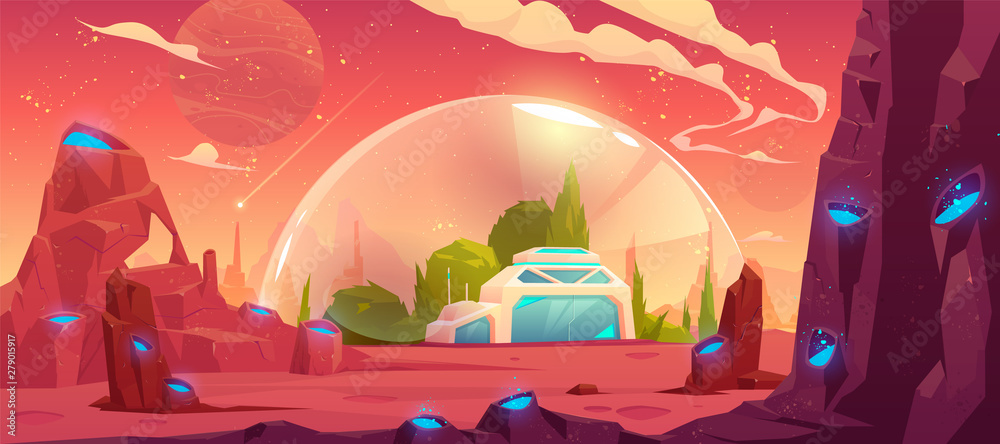
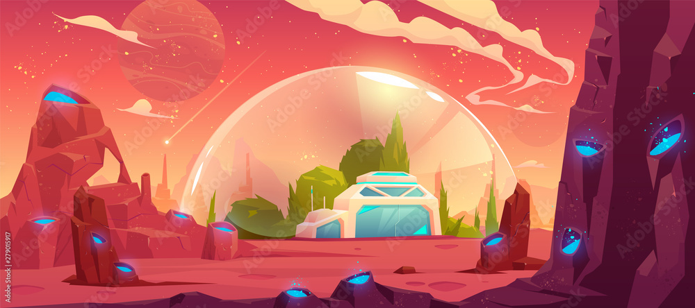

ESPACIAL
Han pasado apenas 60 años desde que el 4 de octubre de 1957 se lanzara al espacio el primer satélite artificial de la Tierra, el Sputnik, dando el pistoletazo de salida a la era espacial. En estas seis décadas la actividad espacial nos ha llevado a explorar nuestro sistema solar como nunca antes lo habíamos hecho, nos ha brindado asombrosas imágenes de galaxias lejanas, nos ha hecho soñar con la llegada del hombre a la Luna y nos ha inspirado fruto de la colaboración internacional para alcanzar grandes metas comunes, como la Estación Espacial Internacional.Tecnología espacial es la tecnología relacionada con la llegada al espacio, el uso y mantenimiento de diferentes sistemas (vitales, o de experimentación) durante la estancia en el espacio o vuelo espacial y el retorno de las personas y las cosas desde el espacio.
Actualmente, diversas aplicaciones de uso diario dependen de tecnologías específicamente desarrolladas para el espacio exterior: Satélites de telecomunicaciones, satélites etelemetría, etc. Inicialmente éstas tecnologías fueron consideradas tecnología espacial, especialmente durante la guerra fría y la subsiguiente carrera espacial pero la amplia utilización actual, mucho menos orientada al entorno militar y la cantidad de aplicaciones creadas, especialmente desde el desarrollo de los ordenadores, hacen que sea difícil considerarlas como tal.Pero, más allá de los logros científicos y de la gran fascinación que ejerce la exploración espacial, las tecnologías espaciales tienen un gran impacto en nuestra vida diaria, aunque a veces no seamos plenamente conscientes de ello, haciéndola más fácil, segura y sostenible. Efectivamente, el sector espacial tiene un papel clave y creciente en ámbitos como las comunicaciones, el transporte, el medio ambiente, la energía, la agricultura, la defensa y la seguridad.
 
